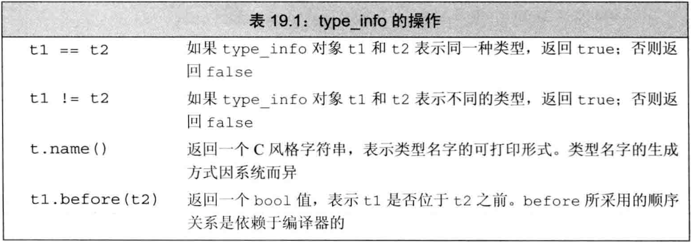

C++ primer 第19章 特殊工具与技术
文章目录
控制内存分配
- 某些程序对内存分配有特殊要求，不能直接使用标准内存管理机制
- 重载
new和delete算符可控制内存分配的过程
重载new和delete
- 说法“重载new和delete”，但重载new和delete与重载其他算符的过程非常不同
- 使用
new/new []表达式的过程：- 调用名为
operator new/operator new[]的标准库函数，分配足够大的原始的未命名的内存空间 - 编译器运行对应的构造函数以构造对象，并传入初值
- 返回指向该对象的指针
- 调用名为
- 使用
delete/delete []表达式的过程：- 对指针所指对象或数组中的元素执行对应的析构函数
- 调用名为
operator delete/operator delete[]的标准库函数，释放内存空间
- 若程序希望控制内存分配的过程，则需要定义自己的
operator new/operator delete函数。即使标准库中已有它们的定义也可自定义，编译器将使用自定义的版本代替标准库的版本 - 自定义了全局的
operator new/operator delete函数后，程序负责控制动态内存 operator new/operator delete函数只能在全局作用域和类作用域中定义- 编译器处理new/delete表达式时查找operator的过程（对象是类类型）：
- 查找类类型及其基类类型的作用域中的operator
- 查找全局作用域中的operator
- 使用标准库的operator
- 可使用作用域算符令new和delete表达式忽略定义在类中的operator函数，直接执行全局作用域的版本，如
::new只查找全局作用域中的operator new - 标准库定义了
operator new/operator delete的8个重载：
|
|
- 类型
nothrow_t是定义于头文件new的一个struct，该类型不包含任何成员。同时定义了一个名为nothrow的const对象，通过该对象可手动请求new的非抛出版本 - operator delete不允许抛出异常（类似析构函数），重载它时必须指定
noexcept - 应用程序可自定义8个operator重载中的任一个，只要自定义的版本位于全局作用域或类作用域
- operator new在对象构造之前而operator delete在对象析构之后，故将这些operator定义为类的成员时是隐式的
static，且不能操作类的任何数据成员 - 对于operator new/operator new[]：
- 返回类型必须是void *，第一个形参必须是size_t且该形参不能有默认实参
- 编译器调用operator new时，将存储指定类型对象所需的byte数传给size_t形参
- 编译器调用operator new[]时，将存储数组中所有元素所需的空间传给size_t形参
- 自定义operator new时可提供额外形参，此时使用它的new表达式必须用
定位new形式传递实参 - 函数
void *operator new(size_t,void *);不可被用户重载，它只供标准库使用
- 对于operator delete/operator delete[]：
- 返回类型必须是void，第一个形参必须是void *
- 执行delete表达式将调用相应的operator函数，用指向待释放内存的指针初始化void *形参
- 定义为类的成员时，该函数可包含另外一个size_t形参，该形参的初始值是void *形参所指对象的字节数
- size_t形参可用于删除继承体系的对象，若基类有虚析构函数则传给size_t形参的字节数由void *所指对象的动态类型决定，且operator delete的版本也由对象的动态类型决定
- 重定义operator new/delete的目的在于改变内存分配的方式，并未重载new/delete表达式（与其他重载算符不同），这两个表达式的行为不可改变
- C++从C中继承了
malloc/free函数，它们定义于cstdlib头文件，用于控制内存的分配malloc函数接受一个表示待分配字节数的size_t，返回指向分配空间的指针，或返回0表示分配失败free函数接受一个void *，它是malloc返回的指针的副本，free将相关内存返回给系统。free(0)无意义
- 例子：使用malloc/free重新定义operator new/delete
|
|
定位new表达式
- operator new/delete可用于new/delete表达式，但也可被用户代码手动调用，实现分配空间和构造对象的分离：
- operator new用于分配空间
- 传递地址的定位new用于在已分配的空间中构造对象
- operator new/delete的行为和
allocator类的allocate/deallocate成员函数很相似，都只负责空间的分配/释放，不会构造/销毁对象。在C++11引入allocator之前，常用operator new/delete - operator new的行为类似allocator::allocate，它们的区别：
- allocator::allocate应使用allocator::construct构造对象
- operator new应使用传递地址的定位new构造对象
- 使用operator new分配的内存空间应使用
定位new来构造对象，可向定位new传递一个地址，在该地址中构造对象 - 传递地址的定位new形式：
|
|
- 其中
place_address是指针，initializers提供实参调用type类型的构造函数，size是构造元素的数量 - 向定位new传递地址时，使用
void *operator new(size_t,void *);来分配内存。该函数并不分配任何内存，且不能被用户重定义。因此，传递地址的定位new可用于在一个已分配好的内存地址上构造对象 - 传递地址的定位new的行为类似allocator::construct，它们的区别：
- 传给allocator::construct的指针必须指向allocator对象分配的空间
- 传给定位new的指针不需指向operator new分配的内存，甚至不需要指向动态内存
- 析构函数可被对象/引用/指针显式调用，类似allocator分配的对象用allocator::destroy销毁
- 析构函数调用时清除给定对象，但不释放内存，类似allocator::destroy
运行时类型识别
运行时类型识别(RTTI)的功能由两个算符实现：typeid算符用于返回表达式的类型dynamic_cast算符用于将基类引用/指针安全地转换为派生类引用/指针
- 将typeid和dynamic_cast用于某种类型的指针/引用，且该类型有虚函数时，算符将使用指针/引用所指对象的动态类型
- 若想使用基类引用/指针来执行派生类操作，且该操作不是虚函数（应尽量使用虚函数，但有时无法定义虚函数，如static/inline/构造函数），则可使用RTTI
- 与虚函数相比，RTTI风险更多：程序员必须知道转换的目标类型，且必须检查类型转换是否成功执行
- 应尽量使用虚函数而不是RTTI
dynamic_cast算符
- dynamic_cast的使用形式：
dynamic_cast<type *>(e)，e必须是有效的指针dynamic_cast<type &>(e)，e必须是左值dynamic_cast<type &&>(e)，e必须是右值type是目标类型，必须是类类型，通常还应该有虚函数e的类型必须是type的公有派生类/公有基类/type本身，否则转换失败
- dynamic_cast转换失败时：
- 若目标是指针类型且失败，则结果为0
- 若目标是引用类型且失败，则抛出
std::bad_cast异常，该异常定义于typeinfo头文件
- 对空指针执行dynamic_cast的结果是所需类型的空指针
- 对于指针类型，在条件部分使用dynamic_cast可确保一条表达式中同时完成类型转换和结果检查
- 例子：对指针类型的dynamic_cast使用if来处理失败情形
|
|
- 对于引用类型，不存在空引用，故无法使用与指针相同的报错策略，只能使用bad_cast抛出异常
- 例子：对引用类型的dynamic_cast使用try-catch来处理失败情形
|
|
typeid算符
- typeid算符允许程序询问表达式的对象类型
- typeid表达式的形式是
typeid(e)- 形参
e是任意表达式或类型名 - 返回值是一个常量对象的引用，该对象的类型是
type_info或其公有派生类。type_info类定义于头文件typeinfo
- 形参
- typeid算符可作用于任意类型的表达式，在求类型时：
- 表达式中的顶层const被忽略
- 若表达式是引用，则返回所引对象的类型
- 若表达式是数组/函数，不会转换为对应的指针
- 若表达式不是类类型，或是不包含虚函数的类类型，则返回静态类型
- 若表达式是定义了虚函数的类的左值，则返回动态类型，即运行时才可知
- 若表达式是指针，即使所指对象是有虚函数的类类型，仍返回该指针的静态类型
- 通常使用typeid比较两条表达式的类型是否相同，或是比较一条表达式的类型与指定类型是否相同
- 例子：使用typeid判断类型是否相同
|
|
- typeid中的表达式是否会被求值，取决于是否需要运行时检查：
- 只有类型含有虚函数时，才会在运行时检查
- 类型不含虚函数时，返回静态类型，不需对表达式求值
- 若表达式的动态类型可能与静态类型不同，则必须在运行时求值。
- 对于类似typeid(*p)的表达式，
- 若p所指类型有虚函数，则必须求值才能得知类型，故p不可为空指针，否则抛出bad_typeid异常
- 若p所指类型没有虚函数，则不需求值，故p可为空指针
使用RTTI
- 若想为继承体系中的类实现相等算符，RTTI非常有用。
- 若两个对象的类型相同且对应数据成员的值相等则这两个对象相等。
- 设计：
- 派生类的相等算符必须考虑派生类新加的成员
- 容易想到的方案是：定义一套虚函数equal，在继承体系的各个层次上分别判断成员相等
- 存在的问题：
- 虚函数的基类版本和派生类版本必须有相同的形参
- 若定义虚函数equal则形参必须是基类的引用，此时只能使用基类成员，无法比较派生类
- 解决方案：
- 先比较类型，类型不相同直接false
- 使用typeid比较对象的运行时类型，类型相同才调用虚函数equal逐级比较
- 这些equal的形参都是基类引用，但在两边类型相同时可以安全地把两边都转为self的类型
- 例子：
|
|
type_info类
- type_info类的精确定义随编译器的不同略有差异
- C++标准规定
type_info类必须定义于头文件typeinfo，且至少提供表19.1所示操作：  - 由于tpye_info一般是作为基类出现（需要提供额外的类型信息时通常在其派生类中完成），故有public的虚析构函数
- 创建type_info对象的唯一途径是使用
typeid算符：type_info没有默认构造函数，且拷贝/移动构造函数和赋值算符都被定义为删除的。因此无法定义/拷贝/移动type_info类型的对象，也不能为type_info类型对象赋值。 - type_info类的name成员函数返回C风格字符串，表示对象的类型名字
- name的返回值因编译器而异，不一定与程序中使用的类型名一致
- 对name返回值的唯一要求是：不同类型的返回字符串必须有所区别
- 有的编译器会为type_info提供额外的成员函数以提供类型的额外信息，使用时应阅读编译器手册
枚举类型
枚举类型可将一组整型常量组织在一起，每个枚举类型定义了一种新类型。枚举是字面值常量类型- C++包含两种枚举：
限定作用域的枚举（C++11引入）：关键字enum class/struct后接枚举类型名和花括号括起来的枚举成员列表，以分号结束不限定作用域的枚举：省略关键字class/struct，枚举类型名可选
- 在不限定作用域的枚举中，若无枚举类型名则只能在定义枚举时在花括号和分号之间定义它的对象，类似定义类的同时定义对象
- 例子：定义枚举类型
|
|
- 限定作用域的枚举中，枚举成员名字的作用域在枚举类型内部
- 不限定作用域的枚举中，枚举成员名字的作用域与枚举类型本身的作用域相同
- 例子：不限定作用域的枚举和限定作用域的枚举
|
|
- 默认枚举成员的值从0开始依次+1，也可为一个或几个枚举成员指定专门的值。
- 不同枚举成员可以有相同的值
- 若未显式提供枚举成员的值，则当前枚举成员的值等于它左侧枚举成员的值+1
- 枚举成员是
const，故初始化枚举成员时提供的初始值必须是constexpr。 - 每个枚举成员本身是constexpr，可在任何需要constexpr的地方使用枚举成员
- 枚举成员是constexpr：
- 可将枚举类型的对象作为
switch语句的表达式，将枚举值作为case标签 - 可将枚举类型作为非类型模板的形参
- 可在类的定义中初始化枚举类型的static数据成员
- 可将枚举类型的对象作为
- 例子：枚举成员的值
|
|
- 只要枚举类型有名字，就可定义并初始化该类型的对象。要想初始化枚举对象或为其赋值，必须使用该类型的枚举成员或该类型的枚举类对象，而不能用整型
- 不限定作用域的枚举类型对象或枚举成员会自动转换成整型，可在任何需要整型的地方使用它们。而限定作用域的枚举对象/枚举成员不会转换为整型
- 例子：整型和枚举类型的转换
|
|
- 尽管每个枚举类型都定义了唯一的类型，但枚举成员和枚举对象都是由某种整型表示的
- C++11中，可在枚举类型名后加冒号
:和类型名来表明使用该类型（潜在类型）来表示该枚举 - 若未指定枚举类型的潜在类型，则默认：
- 限定作用域的枚举成员类型默认是int
- 不限定作用域的枚举成员不存在默认类型，只知道潜在类型足够大，可容纳枚举值
- 若指定了枚举成员的潜在类型（包括限定作用域默认指定为int）而某个枚举成员的值发生溢出，则引发错误
- 例子：枚举类型指定潜在类型
|
|
- C++11中可对枚举类型使用前置声明，但前置声明时必须指定枚举成员的大小（显式或隐式）
- 不限定作用域的枚举类型前置声明必须手动指明大小，限定作用域的枚举类型前置声明可被隐式指定为int
- 枚举类型的前置声明必须和定义匹配：
- 前置声明和定义中的成员大小必须一致
- 同一个上下文中对同一枚举类型的前置声明和定义，必须都是限定作用域或都是不限定作用域
- 例子：前置声明枚举类型
|
|
- 要想初始化一个枚举类型对象，必须使用该枚举类型的另一对象，或是该枚举类型的成员。不可使用整型初始化/赋值
- 枚举对象的大小与该枚举类型的成员大小一样
- 可使用不限定作用域的枚举类型对象或枚举成员对整型进行初始化/赋值，此时枚举值可能被提升为int或更大的整型
- 例子：整型和枚举类型的转换
|
|
类成员指针
成员指针是可以指向类的非static成员的指针。static成员不属于任何对象故可用普通指针、- 普通指针指向类的对象，成员指针指向类的成员
- 成员指针的类型中包括类类型和成员类型
- 初始化成员指针时，令其指向类的某个成员，但不指定该成员所属的对象。只有使用成员指针时才指定成员所属的对象
- 例子：本节使用7.3.1的Screen类作为示例
|
|
数据成员指针
- 声明成员指针时必须包含成员所属的类，应在
*之前添加classname::以表示该指针指向classname类的成员 - 将成员指针声明为const可使指针既能指向const对象又能指向非const对象，但它不能修改成员
- 初始化成员指针或对其赋值时，需使用取地址符
&，且需指定它所指的成员名 - C++11中声明并定义成员指针最简单的方法是使用
auto或decltype - 例子：声明/定义成员指针
|
|
- 初始化成员指针或为其赋值时，该指针并未指向任何数据。成员指针仅指定成员而非其所属的对象，只有解引用时才提供对象信息
- 两种成员指针访问算符，用于解引用成员指针并获得对象的成员：
.*类似.，作用于对象，取其成员->*类似->，作用于指向对象的指针，取其成员- 这两个算符先用
*解引用成员指针来得知需访问哪个成员，再用./->通过传入的对象/指向对象的指针来访问该成员
- 例子：解引用成员指针
|
|
- 常规的访问控制规则对成员指针同样有效，即private成员必须在类内访问或用友元访问。
- 类的数据成员一般是private，指向数据成员的指针需要权限：
- 最好在类内定义成员函数，令其返回值是指向该数据成员的指针
- 该成员函数应该是static的，因为初始化成员指针时要用类名而不是对象来访问该成员函数
- 例子：使用static成员函数来返回指向private数据成员的成员指针
|
|
成员函数指针
- 可以定义指向类的成员函数的指针，最简单的方法是用
auto推断类型 - 使用
classname::*的形式声明指向成员函数的指针，成员函数指针也要指定函数的返回类型和形参列表，若函数是const成员或引用成员，指针也应是const或引用 - 若成员函数存在重载问题，则必须显式声明函数类型，以指明想要哪个函数
- 书写成员函数类型时，
classname::*pointername必须用括号，否则pointername与右侧结合，错误 - 在成员函数和指向成员函数的指针之间不存在自动转换（和普通函数指针不同）
- 例子：定义成员函数指针
|
|
- 使用./->算符来解引用成员函数指针，并传入对象得到其对应成员函数
- 函数调用算符的优先级较高，故声明指向成员函数的指针或使用成员函数指针进行函数调用时，括号必不可少，即
(Class::*p)和(obg.*p)(args) - 例子：用成员函数指针调用成员函数
|
|
- 使用类型别名或typedef可让成员指针更容易理解
- 可将成员函数指针作为某个函数的返回类型或形参类型，其中成员指针作为形参时也可拥有默认实参
- 例子：成员指针作为形参
|
|
- 对于普通函数指针和成员函数指针，常见的用法是将其存入函数表（若一个类有几个相同类型的成员函数，可用函数表）
- 例子：用函数表管理相同类型的成员函数
|
|
将成员函数用作可调用对象
- 要想通过成员函数指针调用函数，必须首先用
.*/->*算符将指针绑定到对象 - 成员函数指针本身不是可调用对象，也不可自动转换为函数类型，故不可直接使用调用算符
() - 由于成员函数指针不可调用，故不可将其传递给需要可调用对象的形参，例如标准库算法
- 例子：形参为可调用对象时不可传入成员函数指针
|
|
- 可使用标准库模板
function来从成员函数指针中获取可调用对象 - 使用function为成员函数生成可调用对象时，需将隐式的this形参变为显式
- 当function对象包含有成员函数指针时，function可自动选择正确的算符
.*/->*来执行调用 - 定义function对象时，必须指定该对象的调用形式：
- 若使用成员函数定义function，则第一个形参必须表示调用该成员的对象的类型（即显式写出this形参）
- 提供给function的调用形式必须指明调用该成员函数的对象的传入形式是否是指针/引用
- 例子：使用function从成员函数指针中获取可调用对象
|
|
- 使用function时必须手动提供成员的调用形式
- 可使用标准库函数
mem_fn来从成员函数指针生成可调用对象，且可推断成员函数的类型，mem_fn也定义于头文件functional - 成员函数通过mem_fn生成的可调用对象，既可被对象调用也可被指向对象的指针调用，可以认为mem_fn生成的可调用对象有一对重载的调用算符，一个接受
object *另一个接受object & - 例子：使用mem_fn从成员函数指针中获取可调用对象
|
|
- 可使用标准库函数
bind来从成员含指针生成可调用对象- 类似function：若对成员函数使用bind，则必须将隐式的this形参写为显式
- 类似mem_fn：可自动推导类型，且生成的可调用对象可用对象调用也可用对象的指针调用
- 例子：使用bind从成员函数指针中获取可调用对象
|
|
嵌套类
- 定义在另一个类内部的类称为
嵌套类或嵌套类型，嵌套类常用作实现部分 - 嵌套类是独立的类，与外层类没有关系。它们互相独立，外层类的对象中不包含嵌套类的成员，反之亦然
- 嵌套类的名字在外层类的作用域中可见，在外层类之外不可见。因此常用作外部类某功能的实现
- 嵌套类使用访问限定符来控制外界成员对其成员的访问权限。外层类对嵌套类成员没有特殊的访问权限，反之亦然
- 嵌套类在外层类中定义了一个类型成员，该类型成员的访问权限取决于外层类（外层类指定嵌套类型成员为public/protected/private）
- 嵌套类必须声明在外层类的内部，但可以定义在外层类的内部或外部。在外层类之外定义嵌套类时，必须用
::指定外层类作用域 - 嵌套类在外层类的作用域中，故嵌套类中可直接使用外层类的名字
- 嵌套类直到自身定义结束前，一直是不完全类型
- 例子：定义嵌套类
|
|
- 在嵌套类和外层类外定义嵌套类的成员函数时，必须用::指定外层类和嵌套类的作用域
- 若嵌套类声明了static成员，则该static成员的定义将位于外层类之外
- 例子：嵌套类和外层类外部定义嵌套类的成员函数和static成员
|
|
- 名字查找的一般规则适用于嵌套类，嵌套类本身是一个嵌套作用域
- 嵌套类是外层类的类型成员，外层类的其他成员可像使用任何其他类型成员一样使用嵌套类的名字
- 在嵌套类和外层类外部定义函数时，返回类型不在类的作用域中，而函数名后面的部分在嵌套类的作用域中
- 尽管嵌套类定义在外层类的作用域中，但它们的对象没有任何关系。
- 例子：外层类外部定义外层类的成员函数
|
|
union：一种节省空间的类
联合(union)是一种特殊的类，一个union定义了一种新类型- 一个union可有多个数据成员，但任意时刻只有一个数据成员可以有值，给union的某个成员赋值后，其他成员变为未定义
- 分配给union对象的存储空间至少要能容纳它的最大成员
- union不能含有引用类型的成员，除此之外可以是绝大多数类型。C++11中，含构造/析构函数的类也可作为union的成员类型
- union可为其成员指定public/protected/private权限，默认为public
- union可定义成员函数（包括构造/析构函数），但unioin不可作为基类/派生类，故union不可有虚函数
- 定义union时，